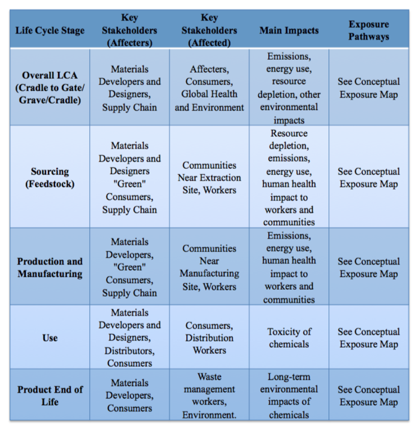

Contents
Resource 4: Stakeholder Considerations & Social Impacts¶
Stakeholder Assessment¶
Life Cycle Considerations¶
Stakeholders can be defined as “those groups who can affect or are affected by the achievement of an organization’s purpose” Stakeholders can be divided into those who are affected by the material impacts (affected), and those who affect the development of that material (affecters) (8).
This can also be viewed as a 2x2 interest versus power grid such as the one below. Stakeholder considerations range from the most immediate, workers to regional to the global environment. The stakeholder impact map has overlap with the exposure mapping since exposure to chemicals is important to health and safety.
image¶
Power versus Interest Grid
Tools & Resources¶
Use this chart to think through who might be affected and how at each stage of your product’s life cycle
 Example chart developed to consider stakeholder exposures and impacts across the life cycle of a product.
Guiding Questions¶
Who can influence the success or failure of your product? Who are your stakeholders? Consider diverse groups: material developers and designers, members of the supply chain, consumers, “green” consumers, parents, teachers, distributors, retailers, trade associations, recyclers, repair organizations, composters, environmental groups, environmental justice groups, social justice groups, community leaders, communities near work sites (e.g. manufacturing plant, extraction site), workers, unions, local politicians, other governmental representatives (federal, state, regional, county, city, international, indigenou./ first nation), and more may be important stakeholders to consider.
Who should be included in this project to provide input? Reference your answer above. In particular, consider people impacted by the product life cycle who are frequently excluded from decisions, such as communities near extraction sites. See Resource 5 - Environmental and Social Justice for guidance.
What impacts should be prioritized based on stakeholder analysis? Consider how stakeholders may be impacted (positively and negatively).
What are the priority impacts based on stakeholder input?
How are those affected parties impacted, via what exposures?
Using informaiton you’ve gathered through life cycle thinking and exposure mapping, what are the most critical product aspects for you to meet the needs of your stakeholders?